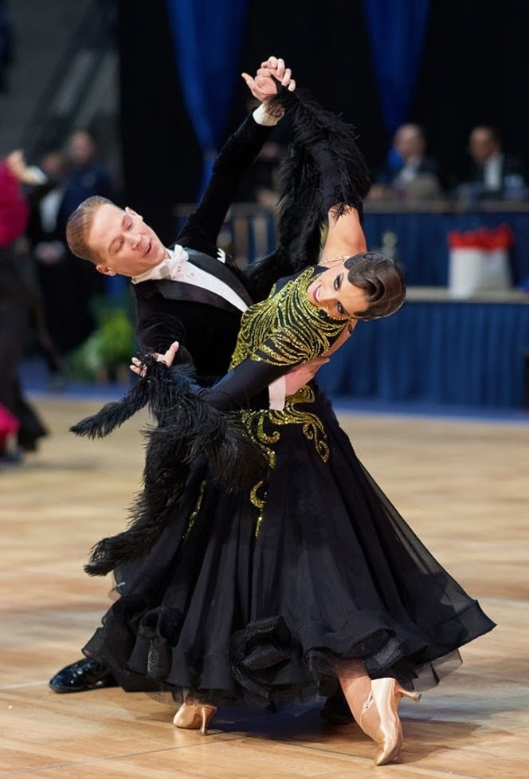

A passion for movement
I started ballroom in fifth grade for two reasons: my older brother did it, and I wanted to be better than him at everything. What began as sibling rivalry turned into the discipline that has shaped my life more than any other. Years later I've competed across the country with the top BYU youth teams, finished as a national vice champion, and trained under coaches from Poland, Russia, Italy, and Canada.
Ballroom asks for a strange combination of things: the conditioning of a sprinter, the precision of a violinist, and the ability to communicate with a partner without saying a word. Ten minutes of back-to-back dances will leave anyone ready to crumble. That's the part I love.
